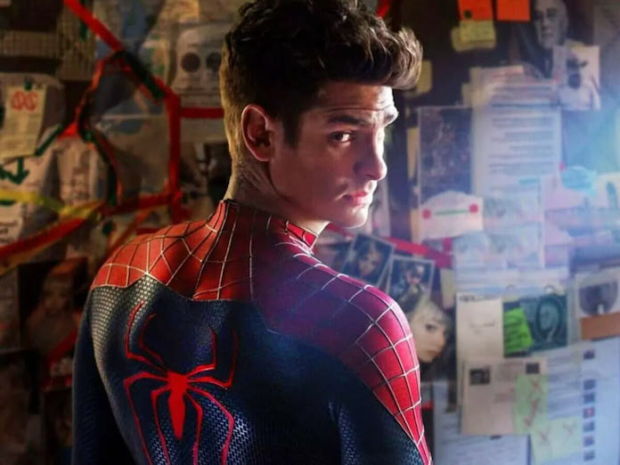

Sobre Andrew Garfield

Sobre Tom Holland
Voltar para o inicio
Sobre Tobey Maguire
Curiosidades sobre Andrew Garfield
Andrew Garfield era fã do Homem-Aranha muito antes de interpretá-lo. Ele já contou que usava fantasias do herói quando pequeno e que o personagem era um dos seus preferidos.
Quando fez o teste para o papel em O Espetacular Homem-Aranha (2012), Andrew manteve tudo em segredo, até mesmo de amigos próximos.
Andrew namorou Emma Stone (Gwen Stacy nos filmes) durante as filmagens. A química real entre eles ajudou a fortalecer a conexão emocional dos personagens.
Sua versão do Homem-Aranha é mais ágil e sarcástica, com um tom mais dramático, especialmente nas cenas emocionais — algo elogiado por muitos fãs.
Algumas das falas mais marcantes do personagem foram improvisadas por Andrew, mostrando o quanto ele estava imerso no papel.